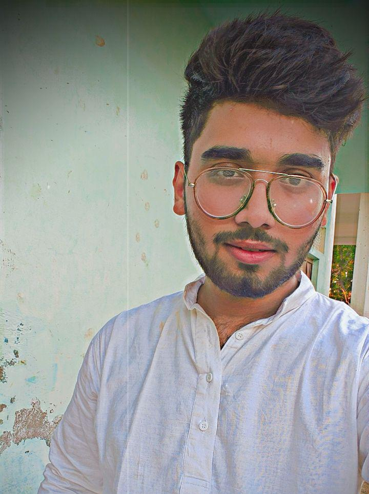

Ebad's profile

About Me
My self Ebad . I was born on 24th OCT 2002 in Azamgarh district of Uttar Pradesh .Now a days, I am learning a diploma of Web Designing & Development.
I am currently learning HTML language. I gave 10th exam in 2019. I passed 10th fromShibli Inter College, Azamgarh district, Uttar Pradesh.
I gave 12th exam in 2021.I passed 12th from Shibli Inter College , Azamgarh district, Uttar Pradesh. I am learning Bachelor of Arts degree from
My Company
Girraj Oil Industry is most refinable company in world . Our quest to make India energy sufficient led us to become one of the largest oil & gas exploration and production players in India . Our refinery at Jamnagar is the world’s largest, integrated, single-location refining complex . It has transformed India from being a net importer of petroleum products to a net exporter . We further went on to explore and discover Oil & Gas fields in deep-sea waters.GOI is now one of the largest Oil & Gas Exploration and Production players in India with a balanced domestic conventional and unconventional hydrocarbons portfolio . Today, GOI is among the first companies globally to adopt an Oil-to-Chemicals strategy to produce the chemical building blocks of a circular economy and integrate it with sustainable downstream derivatives, useful chemicals, and new materials . With its commitment to a clean and sustainable future, Reliance is taking steps to meet its net-zero carbon goals by 2035.
Our quest to secure India’s energy needs led us to explore and discover Oil & Gas fields in deep-sea waters. In 2002-2003, we made a significant deep-sea discovery of gas reserves in the Krishna Godavari basin—the KG D6 Block.
Further discoveries in the KG D6 Block have bolstered India’s energy security, accelerated India’s transition towards a greener gas economy, and made us a pioneer in oil and gas exploration and production . The KG D6 fields are India's first deep-water fields. Oil production in KG D6 fields became the world’s fastest green-field deep-water oil development project.
GOI and GP are bringing three more deep-water fields onto production, setting new global benchmarks for global costs. With water depths of >2,000m, the R Cluster field in KG D6 Block is the deepest offshore producing field in Asia and India’s first ultra-deep-water field. R Cluster, Satellite Cluster, and MJ fields are together expected to produce 30 million metric standard cubic metres per day (MMSCMD) of gas by FY2024 and contribute ~30% of gas production in India.
My Destination
Girraj Oil Industry is most refinable company in world . Our quest to make India energy sufficient led us to become one of the largest oil & gas exploration and production players in India . Our refinery at Jamnagar is the world’s largest, integrated, single-location refining complex . It has transformed India from being a net importer of petroleum products to a net exporter . We further went on to explore and discover Oil & Gas fields in deep-sea waters.GOI is now one of the largest Oil & Gas Exploration and Production players in India with a balanced domestic conventional and unconventional hydrocarbons portfolio . Today, GOI is among the first companies globally to adopt an Oil-to-Chemicals strategy to produce the chemical building blocks of a circular economy and integrate it with sustainable downstream derivatives, useful chemicals, and new materials . With its commitment to a clean and sustainable future, Reliance is taking steps to meet its net-zero carbon goals by 2035.
Our quest to secure India’s energy needs led us to explore and discover Oil & Gas fields in deep-sea waters. In 2002-2003, we made a significant deep-sea discovery of gas reserves in the Krishna Godavari basin—the KG D6 Block.
Further discoveries in the KG D6 Block have bolstered India’s energy security, accelerated India’s transition towards a greener gas economy, and made us a pioneer in oil and gas exploration and production . The KG D6 fields are India's first deep-water fields. Oil production in KG D6 fields became the world’s fastest green-field deep-water oil development project.
GOI and GP are bringing three more deep-water fields onto production, setting new global benchmarks for global costs. With water depths of >2,000m, the R Cluster field in KG D6 Block is the deepest offshore producing field in Asia and India’s first ultra-deep-water field. R Cluster, Satellite Cluster, and MJ fields are together expected to produce 30 million metric standard cubic metres per day (MMSCMD) of gas by FY2024 and contribute ~30% of gas production in India.